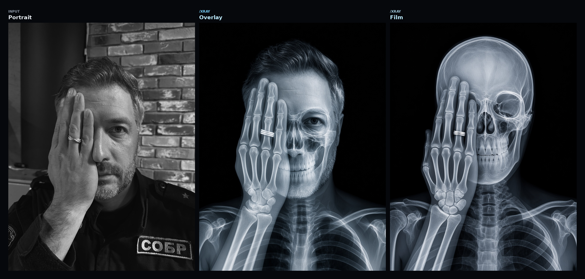
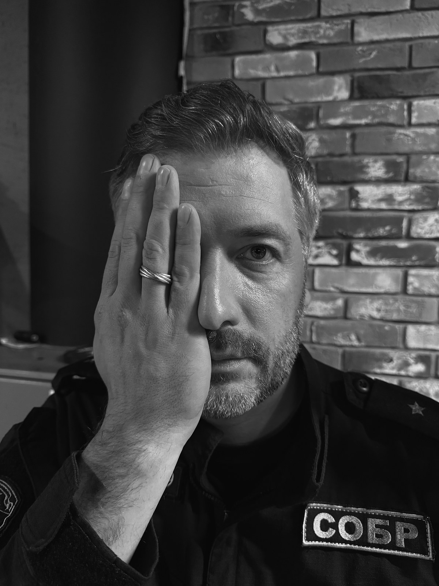
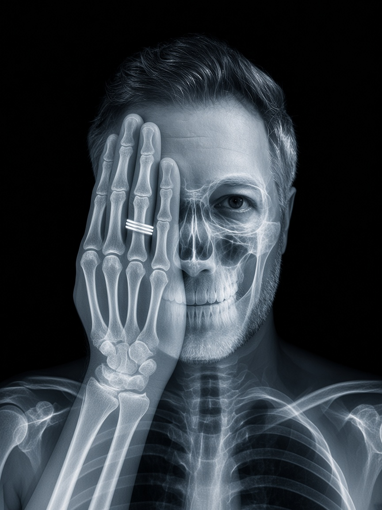
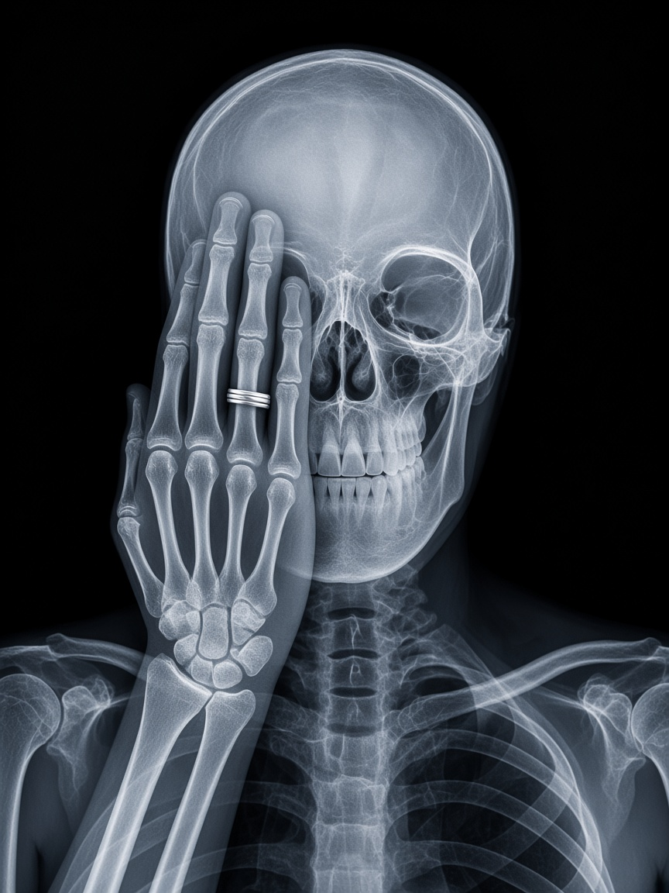

/xray
Рентген-эффект по портрету: скелетная анатомия в той же позе — рука закрывает глаз, кольцо как радионепрозрачный артефакт.




Рентген-эффект по портрету: скелетная анатомия в той же позе — рука закрывает глаз, кольцо как радионепрозрачный артефакт.



